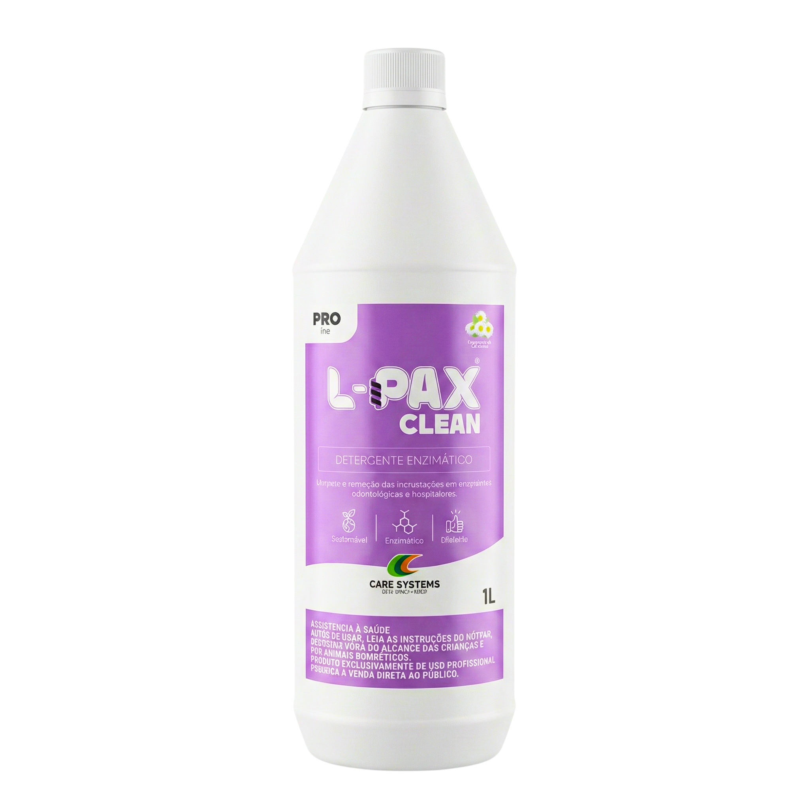
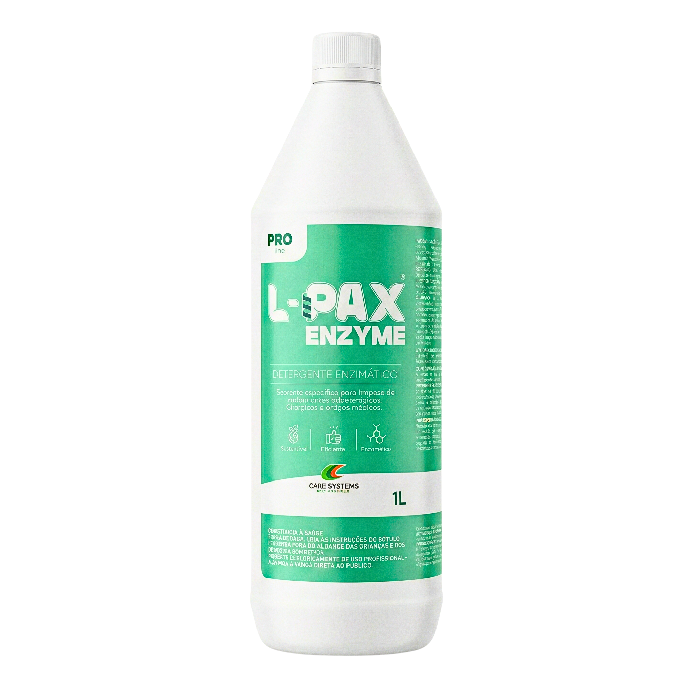

Tecnologia enzimática de alta performance para CMEs e clínicas
A única linha que combina L-PAX Clean e L-PAX Enzyme para prevenção total de biofilmes e esterilização 100% segura.


O perigo oculto na lavagem
O perigo do biofilme
Resíduos microscópicos que detergentes comuns não removem, criando uma blindagem invisível para bactérias perigosas.
Corrosão de instrumentais
O uso de químicos agressivos e inadequados diminui drasticamente a vida útil de alicates, pinças e brocas delicadas.
Falha na esterilização
Se não limpou direito, não esteriliza. O risco de infecção cruzada para pacientes começa diretamente na pia de lavagem.
Biotecnologia substitui química agressiva
Ação molecular inteligente
Imagine que a sujeira orgânica é como uma parede de concreto sólida. Detergentes químicos convencionais tentam marretar essa parede, muitas vezes estragando o chão (o seu instrumental) no processo.
Nossas enzimas tecnológicas atuam como robôs microscópicos programados, desmontando o cimento orgânico bloco por bloco. Sem danos ao material, transformando tudo em líquido perfeitamente solúvel em água.
O protocolo duplo L-PAX
Dois produtos integrados. Uma solução completa e definitiva.

L-PAX Clean
O L-PAX Clean é uma solução bioenzimática desenvolvida para a remoção eficaz de sangue, resíduos orgânicos e sujidades invisíveis que comprometem os processos de higienização.
Ao atuar na degradação da matéria orgânica, o produto prepara superfícies, instrumentos e ambientes para protocolos de esterilização mais eficientes e seguros, reduzindo falhas e retrabalhos na rotina clínica.
Principais aplicações:
- Clínicas odontológicas
- Hospitais e CMEs
- Ambientes médicos e áreas críticas

L-PAX Enzyme
O L-PAX Enzyme é uma solução bioenzimática voltada ao controle biológico contínuo, atuando na degradação da matéria orgânica residual que favorece a formação de biofilmes e a recorrência de contaminações.
Seu uso contribui para a estabilidade microbiológica de ambientes críticos, apoiando rotinas mais seguras e previsíveis ao longo do tempo.
Principais aplicações:
- Ralos e tubulações
- Pontos críticos de ambientes clínicos
- Áreas com risco recorrente de contaminação
Criado para alta exigência
CMEs hospitalares
Otimização de tempo da equipe e segurança laboratorial na validação da limpeza diária.
Clínicas odontológicas
Proteção do patrimônio de instrumentais rotativos e garantia de biossegurança ao paciente.
Gestores de saúde
Redução mensurável de custos diretos com reposição de materiais corroídos por químicos básicos.
Ciência certificada.
dedicado
ANVISA
biodegradável
especializado